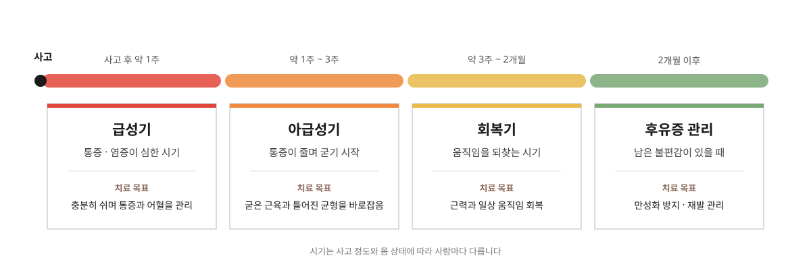

01 · 사고 후 약 1주
급성기
통증과 염증이 가장 심하고 몸이 많이 놀라 있는 시기입니다. 무리하지 않고 충분히 쉬면서 통증을 가라앉히고 사고로 생긴 어혈을 풀어 줍니다.
치료 목표 · 통증과 어혈 관리
홈 > 교통사고 > 치료 과정
사고 직후부터 회복까지, 시기에 맞춰 치료합니다
STAGE
사고 직후 통증과 염증이 심할 때와, 통증이 줄고 근육이 굳기 시작할 때 몸에 필요한 것은 다릅니다. 갈창림한의원은 어느 시기든 침·약침, 추나, 한약, 뜸·부항·물리치료요법을 함께 하면서, 사고 후 지난 시간과 지금의 몸 상태에 맞춰 치료의 목표와 강도를 조절합니다.

01 · 사고 후 약 1주
통증과 염증이 가장 심하고 몸이 많이 놀라 있는 시기입니다. 무리하지 않고 충분히 쉬면서 통증을 가라앉히고 사고로 생긴 어혈을 풀어 줍니다.
치료 목표 · 통증과 어혈 관리
02 · 약 1주 ~ 3주
통증이 줄어드는 대신 근육이 뻣뻣하게 굳기 시작하는 시기입니다. 굳은 근육을 풀고 사고 충격으로 틀어진 몸의 균형을 바로잡습니다.
치료 목표 · 굳은 근육과 틀어진 균형 바로잡기
03 · 약 3주 ~ 2개월
통증이 많이 줄고 움직임을 되찾아 가는 시기입니다. 약해진 근력과 관절의 움직임을 회복해 일상으로 돌아갈 수 있도록 돕습니다.
치료 목표 · 근력과 일상 움직임 회복
04 · 2개월 이후
시간이 지나도 불편함이 남아 있을 때입니다. 통증이 굳어 오래가지 않도록 관리하고, 날씨나 피로에 따라 다시 아파지는 것을 줄이도록 돕습니다.
치료 목표 · 만성화 방지와 재발 관리
※ 시기는 사고 정도와 몸 상태에 따라 사람마다 다르며, 진찰 후 그날의 상태에 맞춰 치료를 조절합니다.
FLOW
물리치료로 굳은 근육을 먼저 따뜻하게 풀어 준 뒤 침·약침과 추나를 진행합니다.
※ 그날의 몸 상태에 따라 일부 치료는 달라질 수 있습니다.
CHECK
같은 사고라도 다친 곳과 아픈 정도는 사람마다 다릅니다. 처음 오셨을 때 아래 내용을 자세히 여쭤보고 치료 계획을 세웁니다.
INSURANCE
보험사에 사고를 접수하고 받은 접수번호가 있으면 자동차보험으로 진료받으실 수 있습니다. 처음이라 낯설어도 접수부터 차근차근 안내해 드립니다.
※ 어느 보험사에 접수할지, 보험 적용 범위가 어떻게 되는지는 사고 내용에 따라 다르니 보험사에 함께 확인해 주세요.
TIME
FAQ
보험사 접수번호와 신분증을 챙겨 주세요. 다른 병원에서 받은 검사 결과지가 있다면 함께 가져오시면 진료에 도움이 됩니다.
통증이 심한 초기에는 자주 치료받는 것이 좋고, 좋아질수록 간격을 넓혀 갑니다. 진찰 후 지금 상태에 맞는 내원 간격을 안내해 드립니다.
사고 정도와 몸 상태에 따라 사람마다 다릅니다. 증상이 달라지는 것을 보며 치료 기간을 함께 정합니다.
네. 시간이 지나도 남아 있는 불편함은 후유증 관리로 치료할 수 있습니다. 자동차보험 적용 여부는 보험사에 함께 확인해 주세요.
가능합니다. 보험사에 한의원 진료를 받겠다고 알리고, 접수번호를 가지고 내원해 주세요.